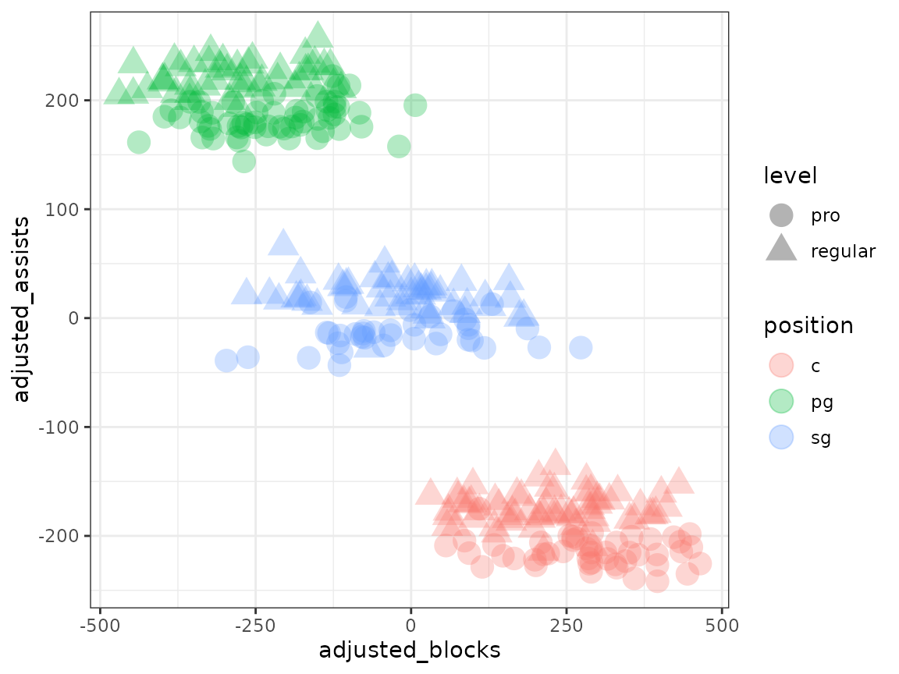

Unwanted Signal
confounders.RmdDownload a copy of the vignette to follow along here: unwanted_signal.Rmd
This vignette walks through handling confounding variables and variables introducing unwanted signal using the metasnf package.
A confounding variable is one that influences both a dependent and independent variable, making it appear as though there is a stronger association between the two than there mechanistically is.
An unwanted variable (terminology which is being defined here) is a variable that a user explicitly does not want their subtyping solution to be strongly associated with.
Accounting for confounding variables
Simply include the confounding variable into the cluster analysis and bear in mind that the separation across clusters you see in any variable is not evidence of a causal link.
Consider the following scenario. Children raised in wealthy homes can afford to go to better schools, are likely to be raised in less stressful environments, and can afford tutoring outside of school. Consequently, they have higher standardized test scores. They are also substantially more likely to live near a lake. If you were to cluster children according to their standardized test scores and whether or not they live near a lake, you may find one cluster that has kids who live near a lake and who have high test scores and a separate cluster that has kids who don’t live near a lake and have low test scores. Of course, there is no causal relationship indicating that living near a lake improves your test scores, or that your test scores causally influence your proximity to lakes. The confounding variable is household income. By including household income in the model, you’ll get the same clusters, but those clusters will also separate across the “confounding” variable.
Unwanted signal
Consider the following scenario. You wish to find clusters of basketball players. For simplicity, let’s say there are three basketball positions:
- point guards, who have a lot of assists and very few blocks
- centers, who have very few assists and lots of blocks
- shooting guards, who have a moderate amount of assists and blocks (and a lot of personal fouls)
You are handed a dataset containing the assists and blocks per season of a large number of basketball players. However, half of the basketball players are from regular players at a community center and the other half are from the pro.
What does the data look like?
library(metasnf)
library(SNFtool)
library(ggplot2)
# Generating function for the blocks-per-season of a player
generate_blocks <- function(level, position) {
# The average blocks per season of all basketball players
blocks <- rnorm(n = 1, mean = 500, sd = 50)
# Effect of playing in the pro
if (level == "pro") {
blocks <- blocks + rnorm(n = 1, mean = 2000, sd = 100)
} else {
# Match the noisiness of the pro players
blocks <- blocks + rnorm(n = 1, mean = 0, sd = 100)
}
# Effect of the player's position
if (position == "pg") {
blocks <- blocks + 0 # Just to be explicit about it
} else if (position == "c") {
blocks <- blocks + 500
} else if (position == "sg") {
blocks <- blocks + 250
}
return(blocks)
}
# Generating function for the assists-per-season of a player
generate_assists <- function(level, position) {
# The average assists per season of all basketball players
assists <- rnorm(n = 1, mean = 1000, sd = 10)
# Effect of playing in the pro
if (level == "pro") {
assists <- assists + rnorm(n = 1, mean = 2500, sd = 10)
} else {
# Match the noisiness of the pro players
assists <- assists + rnorm(n = 1, mean = 0, sd = 10)
}
# Effect of the player's position
if (position == "pg") {
assists <- assists + 400 # Just to be explicit about it
} else if (position == "c") {
assists <- assists + 0
} else if (position == "sg") {
assists <- assists + 200
}
return(assists)
}
#
# Helper function to fill in blocks and assists for a player given their
# position and level.
generate_player_data <- function(df) {
df$"blocks" <- df |> apply(
MARGIN = 1,
FUN = function(x) {
generate_blocks(x[[1]], x[[2]])
}
)
df$"assists" <- df |> apply(
MARGIN = 1,
FUN = function(x) {
generate_assists(x[[1]], x[[2]])
}
)
return(df)
}
# Generate the data
rows <- 300
player_data <- data.frame(
level = sample(c("regular", "pro"), size = rows, replace = TRUE),
position = sample(c("pg", "c", "sg"), size = rows, replace = TRUE)
) |> generate_player_data()
player_data$"id" <- as.character(1:nrow(player_data))
# Plot by position
player_data |>
ggplot(aes(x = blocks, y = assists, shape = level, colour = position)) +
geom_point(size = 5, alpha = 0.3) +
theme_bw()
Let’s say we weren’t interested in the fact that pro players aren’t the same as community center players. We just wanted to know if different styles of play (the ground truth being the position) exist. What kind of clustering results do we get on this data?
set.seed(42)
metasnf_data <- player_data |> dplyr::select("id", "assists", "blocks")
data_list <- generate_data_list(
list(
data = metasnf_data,
name = "player_data",
domain = "player_data",
type = "continuous"
),
uid = "id"
)
settings_matrix <- generate_settings_matrix(
data_list = data_list,
nrow = 1,
possible_snf_schemes = 1,
k_values = 20,
alpha_values = 0.8
)
solutions_matrix <- batch_snf(data_list, settings_matrix)
#> [1] "Row: 1/1 | Time remaining: 0 seconds"
#> [1] "Total time taken: 0 seconds."
cluster_solutions_df <- get_cluster_solutions(solutions_matrix) |>
dplyr::rename(
"id" = "subjectkey",
"cluster" = `1`
)
head(cluster_solutions_df)
#> id cluster
#> 1 subject_1 2
#> 2 subject_10 5
#> 3 subject_100 6
#> 4 subject_101 2
#> 5 subject_102 6
#> 6 subject_103 5
cluster_solutions_df$"cluster" <- factor(cluster_solutions_df$"cluster")
# matching the subject names
metasnf_data$"id" <- paste0("subject_", metasnf_data$"id")
# merging back the original data
metasnf_data <- dplyr::inner_join(metasnf_data, cluster_solutions_df, by = "id")
metasnf_data |>
ggplot(aes(x = blocks, y = assists, colour = cluster)) +
geom_point(size = 5, alpha = 0.3) +
theme_bw()
In this case, the default spectral clustering has done a decent job of separating out the groups, but with too much granularity. We have separate clusters just for pro players and just for community center players, which is not what we want. Other clustering algorithms can fare even worse in this context.
library(factoextra)
#> Welcome! Want to learn more? See two factoextra-related books at https://goo.gl/ve3WBa
fviz_nbclust(metasnf_data[, c("assists", "blocks")], kmeans, method = "wss")
km <- kmeans(metasnf_data[, c("blocks", "assists")], centers = 2, nstart = 25)
km$"cluster"
#> [1] 1 2 1 2 2 2 2 2 2 2 2 1 1 1 2 2 1 1 2 1 1 2 1 2 2 1 1 2 2 1 2 2 2 1 2 2 2
#> [38] 1 2 1 1 2 1 2 1 2 1 2 1 1 2 1 1 2 2 2 1 2 1 1 2 1 2 1 2 1 2 1 2 2 1 2 2 2
#> [75] 1 1 2 1 1 1 2 2 2 1 1 2 2 2 2 2 2 1 2 1 2 1 2 1 1 1 1 1 2 2 2 1 2 1 2 1 1
#> [112] 2 1 2 1 2 2 1 2 2 1 1 1 2 1 2 1 2 2 2 2 2 2 2 2 2 2 1 2 1 1 1 2 2 2 2 1 1
#> [149] 2 2 1 2 2 1 2 1 2 2 2 1 2 1 1 1 1 2 2 2 1 1 2 1 1 2 2 1 2 2 2 2 1 2 1 2 1
#> [186] 2 1 1 2 2 1 1 1 1 2 2 2 1 1 1 2 2 2 1 2 1 2 1 2 2 1 2 2 1 2 2 1 1 1 2 1 1
#> [223] 1 2 1 2 1 2 1 1 1 2 2 2 2 1 2 1 1 2 1 1 2 2 1 2 2 2 2 2 1 2 2 1 1 1 2 1 1
#> [260] 2 2 2 1 1 2 1 1 1 2 2 1 2 2 2 1 2 1 1 2 2 2 1 1 2 1 2 2 1 1 2 2 2 1 2 2 2
#> [297] 2 2 1 1
metasnf_data$"kmeans" <- factor(km$"cluster")
metasnf_data |>
ggplot(aes(x = blocks, y = assists, colour = kmeans)) +
geom_point(size = 5, alpha = 0.3) +
theme_bw()To prevent the clustering from caring about the signal introduced by the pro/community center level differences, we’ll (linearly) regress out the effect of being a pro player.
player_data$"adjusted_blocks" <- resid(lm(blocks ~ level, player_data))
player_data$"adjusted_assists" <- resid(lm(assists ~ level, player_data))
# Plot by position
player_data |>
ggplot(
aes(
x = adjusted_blocks,
y = adjusted_assists,
shape = level,
colour = position
)
) +
geom_point(size = 5, alpha = 0.3) +
theme_bw()
That’s looking much more like what we want to see. Following this correction, you’ll have a much easier identifying the clustering structure that exists independently of the variance you don’t care about from pro-status.
Procedure using the metasnf package
Note that you can only adjust out signal from categorical variables, the adjustment will be linear, it will only be applied to numeric (continuous, discrete, ordinal) data, and that the adjustment can lead to some major information loss (see the section below)!
head(player_data)
#> level position blocks assists id adjusted_blocks adjusted_assists
#> 1 pro sg 2944.0010 3741.0528 1 203.0006 50.6256081
#> 2 regular c 1134.3214 995.4397 2 390.0972 -204.0143886
#> 3 pro pg 2575.5415 3910.7708 3 -165.4590 220.3436998
#> 4 regular pg 572.9200 1415.3429 4 -171.3042 215.8888631
#> 5 regular sg 852.6826 1199.3146 5 108.4584 -0.1394454
#> 6 regular pg 425.2405 1391.9395 6 -318.9837 192.4854343
dl <- generate_data_list(
list(
data = player_data[, c("id", "blocks", "assists")],
name = "player_data",
domain = "player_data",
type = "continuous"
),
uid = "id"
)
# Correction list for just the level
unwanted_signal_list1 <- generate_data_list(
list(
data = player_data[, c("id", "level")],
name = "player_level",
domain = "player_data",
type = "categorical"
),
uid = "id"
)
# Correction list for both player level and position
unwanted_signal_list2 <- generate_data_list(
list(
data = player_data[, c("id", "level", "position")],
name = "player_level",
domain = "player_data",
type = "categorical"
),
uid = "id"
)
adjusted_dl <- remove_signal(dl, unwanted_signal_list1)
# Combine the data from the two data_lists the second list is being merged
# only because it also has the position data, for plotting purposes
merged_df <- collapse_dl(c(adjusted_dl, unwanted_signal_list2))
merged_df |>
ggplot(aes(x = blocks, y = assists, shape = level, colour = position)) +
geom_point(size = 5, alpha = 0.3) +
theme_bw()
# Correcting too many things!
adjusted_dl2 <- remove_signal(dl, unwanted_signal_list2)
merged_df2 <- collapse_dl(c(adjusted_dl2, unwanted_signal_list2))
merged_df2 |>
ggplot(aes(x = blocks, y = assists, shape = level, colour = position)) +
geom_point(size = 5, alpha = 0.3) +
theme_bw()
Limitations and important considerations
When you remove the signal associated with a variable, you will impact every other variable to a degree that is proportional to the correlation between that variable and the unwanted one. Practically, any variable that is strongly correlated with your unwanted signal variable may be better off removed.
Consider two variables: temperature and ice cream sales. It just so happens that ice cream sales are purely proportional to temperature, plus some random noise. There is no other information that one could collect to improve their ability to predict ice cream sales.
If you wanted to learn about the structure of ice cream sales excluding the signal introduced by temperature, the adjustment would turn the ice cream sales data into genuine pure noise. At that point any clusters generated would be totally meaningless and non-reproducible.